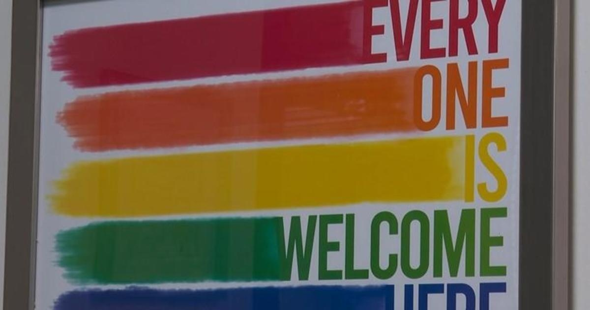

Tool connects members of LGBTQIA+ community with specially trained providersPITTSBURGH (KDKA) — An online tool is connecting members of the LGBTQIA+ community with specially trained providers. Dena Stanley with TransYOUniting said it makes members of the community feel seen and heard. "We are really grateful because they are hearing us. For a lot of folks, this is going to become a sanctuary, so we have to start building in that direction," Stanley said. Last month, UPMC Health Plan launched the LGBTQIA+ gender-affirming program. Providers take an online course to understand the health care needs of the community. Once complete, they get a designation, which lets patients know that the physician is trained. "Health equity is really important to us at UPMC Health Plan, and this is one way we are trying to hit the mark on that," said Denise Hughes. UPMC Health Plan said that 1,500 physicians are trained and the program is leading to more people seeking care. Kim Zynn told KDKA-TV's Mamie Bah, "We've had physicians tell us that they've had new patients come to them because they saw the designation. Either because they were part of the community and wanted to go to a physician who had been trained or they felt that the integrity of the physician was such that they were open-minded and wanted to come." Stanley believes the program is a step in the right direction. "We are ecstatic again," Stanley said. "We are hoping that that's what's going to continue to happen, that they are continuously training their staff." for more features. |
 |